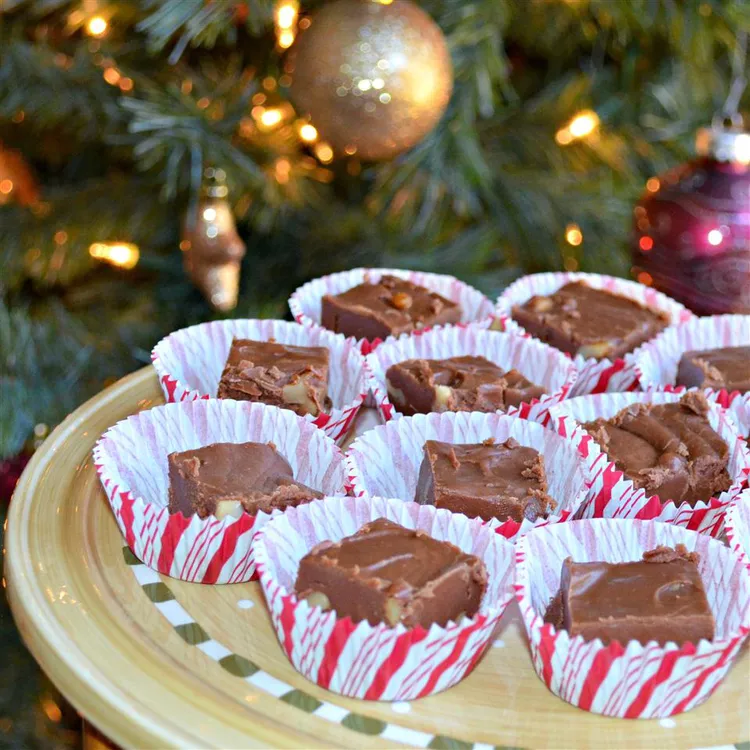

Home

This is the original recipe for fantasy fudge, a classic dessert at
Christmastime! The budget-friendly ingredients and more simplistic
directions make this one of the best fudge recipes around!
- 3 cups white sugar
- 3/4 cup margarine
- 2/3 cup evaporated milk
- 1 (12 ounce) bag semisweet chocolate chips
- 1 (7 ounce) jar marshmallow cream
- 1 cup chopped walnuts
- 1 teaspoon vanilla extract
- Grease a 9x13-inch pan.
-
Mix sugar, margarine, and evaporated milk in a large, heavy
saucepan over medium heat, stirring to dissolve sugar. Bring
mixture to a full boil and cook for 5 minutes, stirring
constantly.
-
Remove from the heat and add chocolate chips; stir until
chocolate chips are melted and mixture is thoroughly combined.
Stir in marshmallow cream until incorporated. Mix in walnuts
and vanilla.
-
Transfer fudge to the prepared pan and use an offset spatula to
spread out and flatten. Let cool for at least 1 hour before
cutting into squares.
Fantasy Fudge Recipe on AllRecipes.com